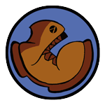
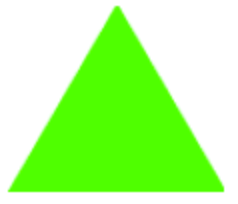

Los estudiantes son introducidos a una representación de asignación de mapeo para funciones, en la que el objeto de función existe como un medio de traducir puntos
Desde un dominio a un rango. Junto con su comprensión de Círculos de Evaluación, los estudiantes generalizan su comprensión de las funciones para
Incluyen otros tipos de datos, incluyendo cadenas(strings) e imágenes.
Los estándares con el prefijo BS son específicos de Bootstrap; Otros son del Common Core. Pase el mouse sobre cada estándar para ver sus correspondientes declaraciones de evidencia. Nuestra Documento de estándares Muestra qué unidades cubren cada estándar.
A-SSE.1-2: The student interprets the structure of expressions to solve problems in context
interpretation of complicated expressions by viewing one or more of their parts as a single entity
F-IF.1-3: The student uses function notation to describe, evaluate, and interpret functions in terms of domain and range
description of a function using terms domain and range
N-Q: The student reasons quantitatively in using units to solve problems
correct interpretation of units consistently in formulas
BS-CE: The student translates between structured expressions as arithmetic, code, and Circles of Evaluation
translating a nested (multi-operation) equation into a Circle of Evaluation
translating a Circle of Evaluation into its equivalent programming syntax
BS-IDE: The student is familiar with using a REPL, entering expressions properly, and interpreting error messages
look to error messages as a way of diagnosing syntax errors
BS-PL.1: The student is familiar with declaring values and applying built-in functions using the programming language
representing (numeric, string, boolean, image, etc) values in the programming language
interpreting a function application and identifying its arguments
BS-PL.2: The student is comfortable using and writing Contracts for built-in functions
representing a function’s input and output using a contract
using a function by refering to its contract
Duración: 90 Minutos
Glosario:
contrato: una declaración del nombre, dominio y rango de una función
dominio: el tipo de datos que espera una función
función: un objeto matemático que toma en algunas entradas y produce una salida
imagen: un tipo de datos para imágenes
mensaje de error: información del equipo sobre errores en el código
nombre: cómo nos referimos a una función o valor definido en un idioma (ejemplos: +, *, estrella, círculo)
producen: para calcular un valor de una expresión
rango: el tipo de datos que produce una función
tipo: se refiere a un tipo general de datos, como Number, String, Image o Boolean
valores: una pieza específica de datos, como 5 o " hello "
Materiales:
Preparación:
Tipos
Funciones
Values
Number
+ - * / sqr sqrt expt
1 ,4 ,44.6
Repaso de los Círculos de Evaluación

Repaso
Students practice converting arithmetic expressions into Circles of Evaluation, and then converting those into Code.
Los libros de trabajo de los estudiantes y algo con que escribir.
Repaso de los Círculos de Evaluación(Tiempo 30 mins)
Repaso de los Círculos de Evaluación
Practicar los Círculos de Evaluación, usando la hoja de actividades Página 1
en tu libro de trabajo.
En cada fila, hay una expresión matemática escrita en la columna de la izquierda.
Examina cada una de estas expresiones y dibuja el Círculo de Evaluación para cada uno en la segunda columna.
Una vez que has convertido cada uno de ellos, ve a la tercera columna y convierte cada uno en un programa que se puede introducir en el equipo. No olvides revisar tus paréntesis y ten cuidado al dejar un espacio entre cada entrada.
Make sure students have the opportunity to practice drawing Circles from the outside-in (beginning with a large Circle and filling it in), and from the inside-out (starting with the innermost expression, and building out).
This can be done as a team competition, with each round requiring teams of students to fill in each square of the activity sheet. Make sure you review after every round, to catch mistakes in understanding early.
Cadenas(Strings) e Imágenes
Repaso
Students extend the Circle of Evaluation metaphor to include new functions and datatypes.
Objetivos de aprendizaje
Students will be able to use functions that produce Images
Students will understand the concept of datatype
Students will understand that each value has a datatype
Students will understand that datatypes describe a function’s inputs and outputs
Declaraciones de evidencia
When given Circles of Evaluation for novel expression, functions and datatypes, students will be able to apply the rules for converting Circles of Evaluation into code
Students will be able to identify what each argument to an image-producing function means
Students will be able to write expressions that generate simple images (triangles, circle, stars, etc)
Given a value, students will be able to identify its datatype
Given an expression, students will be able to identify the datatype it will evaluate to
Students will be able to distinguish between types and values
Resultados del Producto
Los estudiantes ingresarán (evaluarán) expresiones para generar Cadenas(Strings) e Imágenes
Materiales
Entorno de edición (WeScheme o DrRacket con el bootstrap-teachpack instalado)
Preparación
Los estudiantes están registrados en WeScheme.org, o han abierto DrRacket.
Los libros de trabajo de los estudiantes y algo con que escribir.
Cadenas(Strings) e Imágenes(Tiempo 20 mins)
Cadenas(Strings) e ImágenesLos Círculos de evaluación son una poderosa herramienta, y pueden ser usados para mucho más que solo números. Considera el círculo de evaluación mostrado aquí.
(star 50"solid""red")
¿Cuál es el nombre de la función que está siendo usada?
¿Cuántos argumentos se le están dando a esa función?
¿Qué crees que hace esa función?
Students are not expected to know all the answers here - the goal is for them to apply what they know about Circles to a novel expression, and discuss for themselves what they think it might mean. Ask them to justify their answers, and to explain why they think they are correct. Linking this back to earlier examples of Circles of Evaluation may be useful.
Las mismas reglas que aplicaste para convertir los Círculos de evaluación en código son aplicables. acá está el código para ese circulo:
(star 50"solid""red")
Digita este código en la ventana de interacciones, y presiona la tecla enter. ¿Qué obtuviste?
¿Qué hace la función star?
Digita la expresión otra vez, pero esta vez utiliza un número más grande en vez de 50. ¿Qué es lo que el primer argumento le dice a la computadora?
Digita la expresión otra vez, esta vez usando el código "outline" en lugar de "solid", teniendo cuidado de mantener las comillas. ¿Qué le dice el segundo argumento a la computadora?
Ahora reemplaza el código "red" con otra cosa (otra vez, ¡Mantén las comillas!). ¿Qué le dice el tercer argumento a la computadora?
This activity is designed to get students playing with new terms and concepts, so they develop their own model for what’s going on. At this point, it is NOT essential that students understand every last component of the code. If you need to give away lots of code snippets, that’s ok - just get them playing!
Hay un tipo completamente nuevo de valor que está siendo usado en estas epresiones: x"solid" and "red" are examples of a completely new datatype, called a String.
Una cadena (string) es lo que está dentro de las comillas.
Students should see Strings as an analog to Numbers: a different type of value, but one that is still a simple program that evaluates to itself and can be passed as an argument to a function. Note that the Number 42 and the String "42" are different values! You could add the Number 42 to another number, but you cannot add the String "42" to another number.
Cuando aprendimos sobre los valores (values), aprendimos que un programa puede ser más que un valor, como un número.
Si escribes un número en la ventana de interacciones, por ejemplo, eso equivale a el mismo. Para recordarte esto,
intenta evaluar 716 en la ventana de interacciones.
¿Qué esperas que devuelva?
Cómo las cadenas (strings) son valores también, el valor "red" ¡es también un programa válido! Así como los valores numéricos, las cadenas (strings) equivaldrán a ellos mismos.
Prueba introducir cadenas (strings) en la ventana de interacciones. ¿Qué ocurre si se pone comillas alrededor de varias palabras? ¿Alrededor de números?
Está expresión también incluyó una nueva función llamada star. Así como la función de suma + toma dos números, star usa en ella un Número (Number) y dos Strings, y produce un nuevo tipo de dato llamado Imagen.
Cuál es el tipo de dato en cada uno de los valores listados abajo: ¿Number, String o Image? – Number, String or Image?
42
"¡Hola, mamá!"
9273482.42

"84729"
"Strings y Numbers son dos tipos de datos diferentes."
Students have now seen three datatypes: Numbers, Strings and Images. You’ll want to make sure students can correctly identify examples of each one.
Tú has visto expresiones que producen valores, como (* 16 4), el cual produce un Number. Otras expresiones, por lo tanto, pueden producir Strings o Images.
¿A qué tipo de dato equivaldrán las siguientes expresiones?
(/ (+ 7 2) 3)
(star 500 "solid" "purple")
(star (+ 1 3) "outline" "blue")
(- (* 4 2) (+ 1 0))
For added practice, have students identify the type of each argument in each of those expressions. Going Further - If time allows, you can go further into Manipulating Images or Making Flags.
Algunos de los items mostrados abajo son tipos, mientras otros son valores. ¿Puedes distinguir la diferencia?
792.24
String
"hi, mom!"
"91"
Number
Image
102
Contratos
Repaso
Students learn to describe functions and their behavior, using formalisms including Contracts (Domain and Range) and Datatypes.
Objetivos de aprendizaje
Students will start to write and use Contracts, which summarize the name, range, and domain of a function
Students will learn how to use a function based on the information in its Contract
Declaraciones de evidencia
Given an expression, students will be able to identify the name of the function being used
Given an expression, students will be able to identify how many arguments are used
Given a value, students will be able to identify its type
Students will be able to identify the parts of a contract
Students will be able to distinguish between contracts and function calls
Given an example of a function being applied, students will be able to write a contract for that function
Resultados del Producto
Los estudiantes escribirán Contratos para expresiones aritméticas, así como varias expresiones productoras de imágenes
Materiales
Entorno de edición (WeScheme o DrRacket con el bootstrap-teachpack instalado)
Preparación
Computadora para cada estudiante (o pareja), corriendo WeScheme o DrRacket
Los libros de trabajo de los estudiantes y algo con que escribir.
Contratos(Tiempo 35 mins)
ContratosYa has visto varias funciones que toman dos números, como +, and -.
Mientras tanto, star toma un Number y dos Strings. Las diferentes funciones toman diferentes entradas, y necesitamos una manera de conocer los requerimientos de cada función.
El dominio de una función son los datos que la función espera.
¿Porque es importante conocer el dominio de una función?
Al mantener una lista de todas las funciones en un idioma, y sus dominios, los programadores pueden buscar fácilmente cómo se utiliza cada función. ¡Sin embargo, también es importante realizar un seguimiento de lo que cada función produce! Por ejemplo, un programa no usaría star si estuviera tratando de producir un número, porque
star sólo produce Images.
El Rango de una función son los datos que una función produce.
Domain and Range are critical concepts. They can be reinforced by modifying a simple expression
(such as (+ 1 2)), asking questions at every step. For example, we know that +
takes two Numbers, which is why 1 and 2 are used in the example. However, each of those values
could be replaced by another expression – as long as that expression evaluates to a
Number. Have students systematically replace each value with an expression, asking them to
justify their replacement using the Domain and Range of each function.
Los Dominios y los Rangos ayudan a los programadores a escribir mejor código, evitando errores tontos y dándose consejos sobre qué hacer a continuación.
Un programador que quiere usar el código star puedes mirar el dominio e inmediatamente saber que el primer dato ingresado fue un número (como100), sin tener que recordarlo cada vez.
En lugar de escribir un único valor acá, un programador puede escribir toda la expresión como por ejemplo, (* 25 4). Sabemos que este código devolverá un valor número (Number) mirando el rango para *; por lo tanto, el resultado de * puede ser usado en lugar de cualquier valor número.
Cuando los programadores escriben los Dominios y Rangos de cada función, escriben lo que se llaman contratos, para realizar un seguimiento de lo que cada función necesita.
Un contrato tiene tres partes: el nombre, el dominio y el rango de una función.
El contrato para star es:
Esto significa que el nombre de la función es star, que toma un número (Number) y dos cadenas (strings) como su dominio,
y produce una imagen como el rango. Utilizamos tipos en vez de valores cuando escribimos un contrato, porque queremos ser más generales: un star podría ser de cualquier tamaño, por lo que el dominio para star especifica que el primer argumento podría ser cualquier número. Si pensamos en un lenguaje como una colección de piezas de Lego, los Contratos son como las pestañas y ranuras que nos dicen cómo cada pieza puede conectarse.
Los contratos son lo suficientemente importantes y útiles que debemos mantener una lista de ellos en alguna parte. Las páginas posteriores de su libro contienen una hoja denominada "Contratos". Escriba el contrato para star en la primera fila de su tabla de contratos.
Common mistakes when students first write down contracts include: writing values (such as "red")
instead of types (such as "String") and forgetting arguments. Read your students’ contracts carefully,
as they often indicate misconceptions that will persist and affect them later on.
Aquí está el contrato para una nueva función:
¿Cuál es el nombre de esa función?
¿Cuantas cosas hay en el dominio de esta función?
¿Cuál es el tipo de cada cosa en el dominio?
¿Cuál es el rango rango de esta función?
Un Contrato le dice exactamente cómo usar la función, escribiendo su Nombre y luego usando valores para cada uno de los argumentos en el dominio. Aquí está un ejemplo de una expresión, escrita para usar rectangle:
¿Qué crees que producirá este código?
Have students experiment with changing the argument values, always drawing attention back to the Domain.
Al escribir los Contratos para nuestras funciones, podemos fácilmente mirar hacia atrás para ver cómo se utilizan.
El contrato para + es mostrado abajo.
¿Puedes escribir el contrato para *, -, / y sqrt?
Ahora que sabes cómo usar un Contrato para escribir una expresión, aquí están los Contratos para varias nuevas funciones que producen Imágenes:
You should start pushing students to write more sophisticated expressions,
replacing Number values with entire expressions (e.g. (star (* 10 5) "solid" "purple")).
Students should be comfortable looking at an entire subexpression as a single
argument to the surrounding function.
You may want to insist that students to write these Contracts into their notebooks
BEFORE allowing them to play with them. Be careful about letting students rush to
the keys without first taking notes!
Esta es una expresión que utiliza una función muy interesante: (bitmap/url "http://bootstrapworld.org/images/icon.gif").
está función recoge la URL de cualquier imagen que pueda encontrar en línea y producirá esa imagen para que pueda utilizarla en su programa.
¿Cuáles son las tres partes de un contrato?
¿Cuál es el nombre de esta nueva función?
¿Cuántas cosas hay en su dominio?
¿Cuál es el dominio de esta función?
¿A qué se evaluará está expresión?
If you want to have students practice using bitmap/url, it is recommended that you use an image search-engine,
such as Google Images or Bing Images.
Make sure that students know how to get the URL for the image itself, not the URL of the web page that contains the image.
Los contratos ayudan a los programadores a escribir código, por lo que siempre es una buena idea anotar contratos para cada función que vea.
¿Puedes averiguar el contrato para una función, sólo por mirar un código de ejemplo? Mira la función que se está utilizando aquí,
y ve si puedes escribir el nombre, dominio y rango para esa función.
¡Asegúrate de no confundir el contrato con una función con código! Algunos de los elementos enumerados a continuación son contratos, pero otros son sólo ejemplos de las funciones que se utilizan. ¿Puedes decir cuál es cuál?
; triangle : Number String String -> Image
(triangle 100 "outline" "blue")
(square (+ 200 5) "solid" "red")
; square : Number String String -> Image
A veces, cometemos errores al escribir código, y usamos un valor que viola el contrato. Afortunadamente, el equipo identifica estos casos y proporciona Mensajes de Error para ayudarnos a encontrar y corregir el problema. Un mensaje de error resalta el código que contiene el error y explica dónde la computadora encontró un problema.
Para cada una de las siguientes expresiones incorrectas, mira el código y ve si puedes averiguar qué está mal sobre él. A continuación, escribe el código en la ventana Interacciones y ve qué mensaje de error recibe. ¿El error identifica el mismo problema que tú cometiste?
(+ 4 "hi")
("hi" + "mom")
(* (+ 4 5) "pizza")
(star "solid" "red" 40)
(star "40" "solid" "red")
(star 40 "red" "solid")
(star 40 "solid" "yelow")
(star (* 4 10) "blue")
(cirle 25 "outline" "blue")
Controlled practice with error messages helps students gain confidence in dealing with them later on.
It is fine if students don’t spot the errors for themselves at first, though having students explain
the problems in their own words should reinforce correct use of these functions later
in the course.
¡Ser un experto en la lectura de mensajes de error es una parte importante de ser un buen programador! Leer mensajes de error es como tener un maestro o un amigo que te ayude con algo en lo que estás trabajando, en lugar de simplemente decir "incorrecto". Cada vez que cometes un error.
Si te haces realmente bueno leyendo estos mensajes, puedes incluso utilizarlos para encontrar funciones que no sabías que existían.
Aquí están los nombres de algunas otras funciones productoras de imágenes, pero ¿cómo funcionan? Trate de averiguar cómo se utilizan en el equipo, mediante la experimentación y la lectura de los mensajes de error. ¿Puedes descubrir su dominio y rango?
rhombus
right-triangle
radial-star
star-polygon
También hay una serie de funciones que toman las imágenes como su entrada. Por ejemplo, suponga que desea invertir una imagen de izquierda a derecha, de modo que apunte en la dirección opuesta. Puedes utilizar la función flip-horizontal, que tiene una imagen como su dominio y rango. Vea el Contrato (y un ejemplo de la función) a continuación:
Functions that take Images as their inputs are often very difficult for students at first, because they absolutely require
that students really understand function composition. If a student is struggling with this concept, have them draw out
the Circle of Evaluation for the example here, and then convert it to code.
Para cada una de las siguientes funciones, escribe el contrato en tu libro y prueba con el código de ejemplo. ¿Puedes averiguar qué hace cada función a su imagen?
As before, urge struggling students to draw out the Circle of Evaluation for each of these.
Concluyendo
Repaso
Objetivos de aprendizaje
Declaraciones de evidencia
Resultados del Producto
Materiales
Preparación
Concluyendo(Tiempo 5 mins)
ConcluyendoEstá lección se amplió en lo que sabes acerca de Círculos de evaluación, expresiones y código para incluir cadenas(strings) e imágenes. Tú aprenderás que sabes acerca de las funciones de Números también de cadenas(strings) e Imágenes (lo que hará que tus programas sean más interesantes). Puedes aprender a utilizar las funciones de Imagen para crear tus propias imágenes y cómo utilizar imágenes en tus programas(a través bitmap/url).
Have students volunteer what they learned in this lesson
Reward behaviors that you value: teamwork, note-taking, engagement, etc
Pass out exit slips, dismiss, clean up.
En la siguiente unidad, aprenderás a crear tus propias funciones para ahorrar trabajo al escribir expresiones (esto resultará ser una parte esencial de escribir un juego). También empezarás a personalizar tu juego con imágenes para los elementos del diseño del juego.